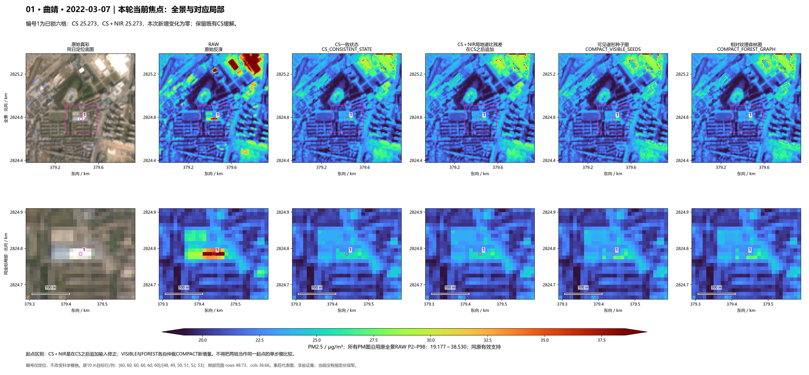
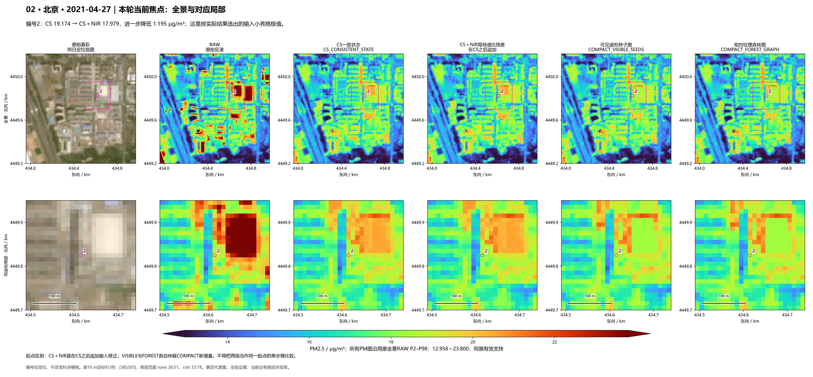
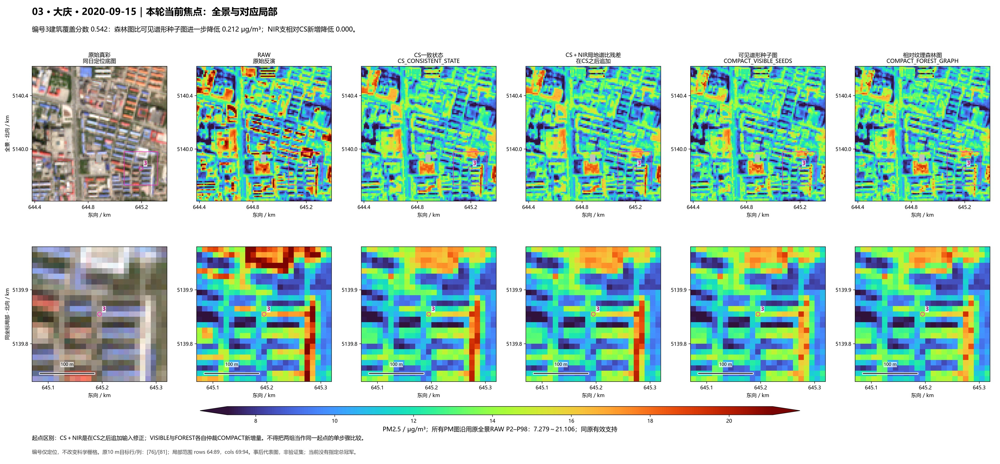
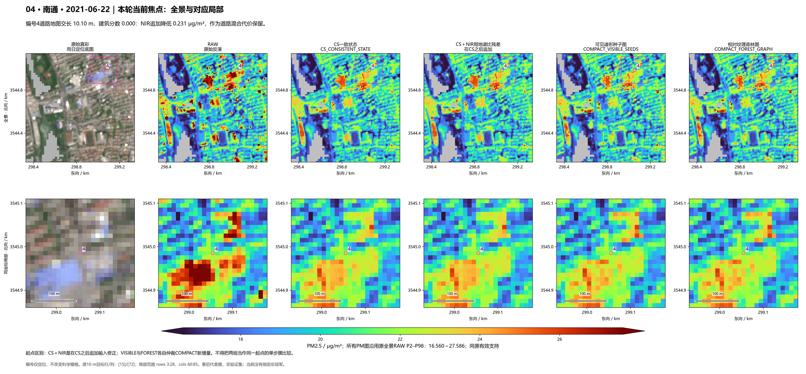
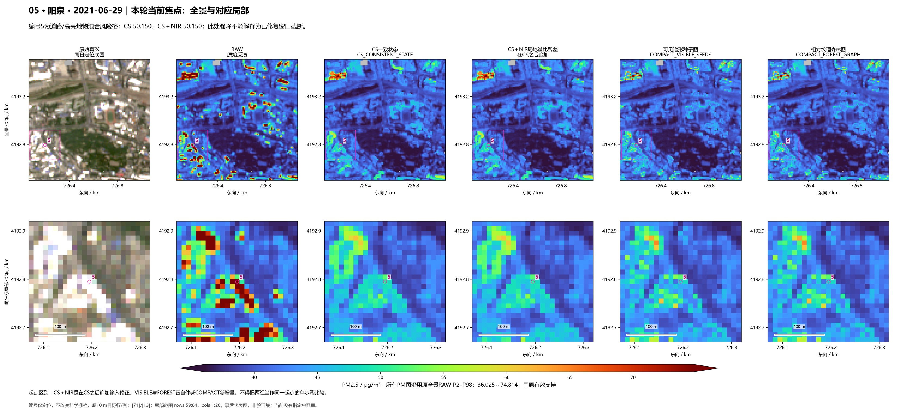

同一场景，上排全景、下排对应局部。六列固定为真彩、RAW、CS一致状态、CS＋NIR残差、可见谱形种子图、森林同叶图。点击图可下载高清版。
编号1为已锁六格：CS 25.273，CS＋NIR 25.273，本次新增变化为零；保留既有CS缓解。

下载300 dpi PNG · 打开JPEG预览 · 沿用已锁R1六格；保留新增为零的关键参照
编号2：CS 19.174 → CS＋NIR 17.979，进一步降低 1.195 μg/m³；这是按实际结果选出的输入小亮格极值。

下载300 dpi PNG · 打开JPEG预览 · 原156场中NIR候选新增降低最大的输入小亮格；事后极值
编号3建筑覆盖分数 0.542：森林图比可见谱形种子图进一步降低 0.212 μg/m³；NIR支相对CS新增降低 0.000。

下载300 dpi PNG · 打开JPEG预览 · 沿用已发布森林图建筑覆盖亮结构最大加强点；事后代表
编号4道路地图交长 10.10 m、建筑分数 0.000：NIR追加降低 0.231 μg/m³，作为道路混合代价保留。

下载300 dpi PNG · 打开JPEG预览 · 原156场中NIR候选弱纯道路交格最大代价；事后极值
编号5为道路/高亮地物混合风险格：CS 50.150，CS＋NIR 50.150；此处强降不能解释为已修复窗口截断。

下载300 dpi PNG · 打开JPEG预览 · 沿用CS新增量最大地图混合风险位置